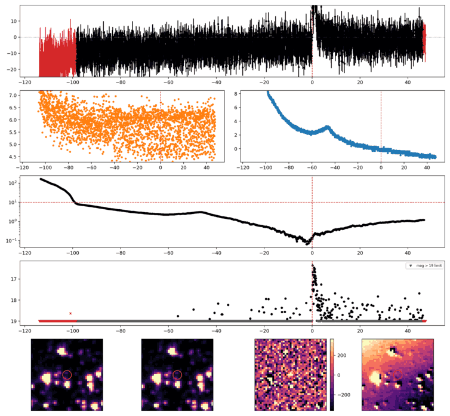
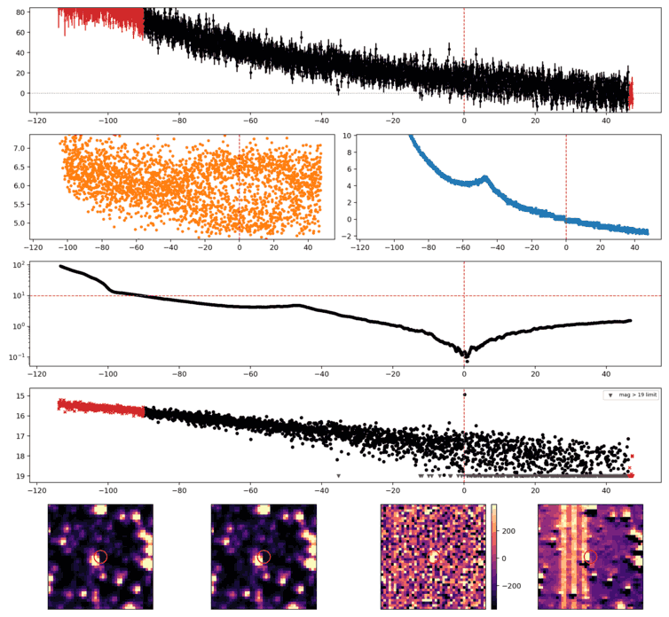
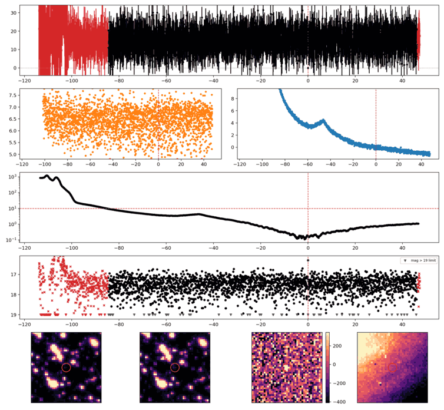
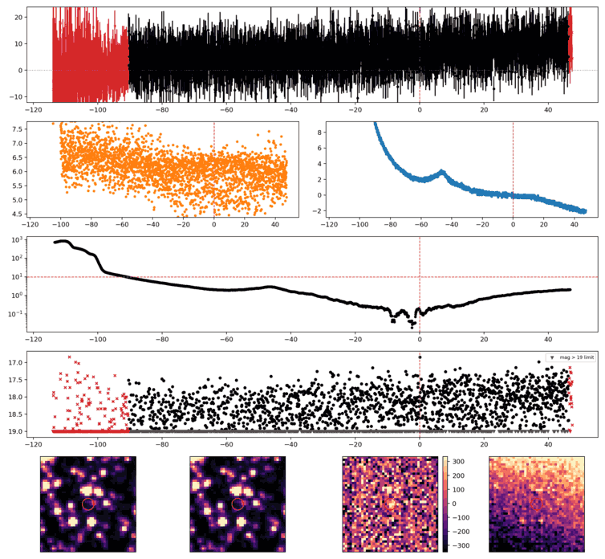

Search centered on refined position (161.0474235, -33.1595205 deg). Gaia coordinates are at J2016.0; proper motions are shown, without epoch propagation. A positional match does not change the candidate flags.
No Gaia DR3 sources found within 5 arcseconds.
Retrieved 2026-10-08T08:09:03.547360+00:00
Representative chosen by category, detection count, then Gaussian S/N. Original measurements and classifications are retained below.

Search centered on refined position (189.4114979, -46.5150765 deg). Gaia coordinates are at J2016.0; proper motions are shown, without epoch propagation. A positional match does not change the candidate flags.
No Gaia DR3 sources found within 5 arcseconds.
Retrieved 2026-10-08T08:09:08.113510+00:00

Search centered on refined position (163.5998908, -21.1791921 deg). Gaia coordinates are at J2016.0; proper motions are shown, without epoch propagation. A positional match does not change the candidate flags.
No Gaia DR3 sources found within 5 arcseconds.
Retrieved 2026-10-08T08:09:13.682354+00:00

Search centered on refined position (158.1257060, -31.2359552 deg). Gaia coordinates are at J2016.0; proper motions are shown, without epoch propagation. A positional match does not change the candidate flags.
No Gaia DR3 sources found within 5 arcseconds.
Retrieved 2026-10-08T08:09:19.797382+00:00